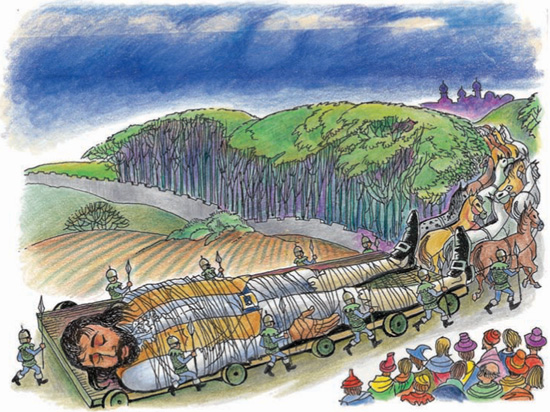

Ngày 4 tháng 5 năm 1699, tàu Antelope lên đường đến vùng Viễn Đông.
Một cơn bão lớn bất ngờ kéo đến.
Con tàu và cả những thủy thủ đều bị nhấn chìm xuống biển. Gulliver bơi liên tục.
Cuối cùng, Gulliver cũng vào được bờ biển. Anh không thấy có ngôi nhà nào cả. Anh quá mệt mỏi và chìm vào giấc ngủ.
Bỗng có một thứ gì đó động đậy trên tay của Gulliver và đang bò lên cánh tay anh.
Gulliver mở mắt ra. Anh thấy một người đàn ông rất nhỏ bé.
Người đàn ông này chỉ cao khoảng 15 cm và đang nhìn chằm chằm vào Gulliver. Gulliver rất ngạc nhiên.
Gulliver nói "Xin chào" với người đàn ông nhỏ bé. Nhưng người đàn ông nhỏ bé đó lại bỏ chạy mất!
Rất nhiều người đàn ông nhỏ bé khác xuất hiện, họ cầm cung tên trên tay và nói một thứ tiếng lạ.
Gulliver rất đói và khát.
Nhưng những người đàn ông nhỏ bé không hiểu Gulliver nói gì. Gulliver giơ tay lên và vẫy, cuối cùng thì tay anh cũng được thả tự do. Anh đưa tay lên miệng, ra ý mình đói.
Giờ thì những người đàn ông nhỏ bé đã hiểu ý của Gulliver. Họ đem thịt, bánh mì, hoa quả và sữa cho Gulliver. Gulliver rất vui.
Gulliver lại thiếp đi. Những người đàn ông nhỏ bé chuyển anh đến thành phố của họ. Họ phải huy động đến hơn 1000 con ngựa!

Gulliver tỉnh giấc. Anh thấy mình đang đứng cạnh một ngôi đền lớn, không thể trốn thoát được.
Gulliver đứng dậy và quan sát xung quanh. Anh thấy một thành phố, những cây cối và ngọn núi nhưng tất cả đều nhỏ bé.
Một hôm, hoàng đế đến thăm Gulliver và nói chuyện với Gulliver nhưng Gulliver không hiểu được lời của hoàng đế.
Hoàng đế cử đến mười vị quan thông minh đến dạy tiếng bản xứ cho Gulliver. Gulliver học rất nhanh. Đất nước này có tên là Lilliput và mọi người nói tiếng Lilliput. Gulliver rất vui vì bây giờ anh có thể giao tiếp được với những người tí hon này.
Một hôm, Gulliver hỏi hoàng đế một câu hỏi.
Nhưng hoàng đế không chắc chắn. Ông nghĩ rằng có lẽ Gulliver sẽ nguy hiểm và ra lệnh cho các sĩ quan đến kiểm tra hành lý của Gulliver. Gulliver sẵn sàng giúp những người lính. Các sĩ quan lập danh sách những thứ họ tìm thấy.
Họ báo cáo với hoàng đế những gì có trong hành lý của Gulliver.
Gulliver giờ đã được tự do. Anh đi dạo quanh thành phố. Trẻ em chơi đùa với anh trên phố và Gulliver rất vui.
Một hôm, hoàng đế lại nói chuyện với Gulliver.
Gulliver giúp hoàng đế đi đến Blefuscu và kéo con tàu của họ về Lilliput. Như vậy, Blefuscu không còn có thể tấn công Lilliput được nữa.
Hoàng đế Lilliput rất vui nhưng cũng có một số kẻ xấu ở Lilliput muốn giết Gulliver. Chúng nói rằng "Hắn quá lớn, hắn ăn quá nhiều".

Vì vậy, Gulliver quyết định rời khỏi Lilliput. Anh đến Blefuscu và tìm kiếm những cuộc phiêu lưu mới ở đó.